本文是张衔瑜第223篇推文
共计3470个字，20张图
我查光怪陆离这个词的词源时，发现是这样来自战国·楚·屈原《离骚》：“纷总总其离合兮，斑陆离其上下。”要是德云社看到这个，早得捡上来说平等王那个屈大夫战国时期就开上了脚踩离合的车——(捧)多新鲜呐
困了。听德云社就困，可能是他们最近出的陪睡相声太多，每次都在唱歌的环节把人唱醒。在完成一些重要的事情之前，需要先把脑子里的内容排出去，排干净大概是。我以前写过一个描述，地铁就像城市的大肠，运输着一坨一坨的大便，排到不同的出口。
二月份也没出几天太阳，更别提上周这会儿在下雪，周末就已经是明晃晃地春装出门。（或许能猜出来这一段是在什么时候写的吗）
下雪还挺好玩的。和Nuage élégant去看了一下岳麓山。山上的雾凇让人觉得是一位须发皆白的老师傅驾鹤而来，又不是很响。山上有时候也指不明到底是在下雪还是下雨，雨雪交加。你听过时而是雪籽落在雪人上、时而是粒大的雨滴的声音吗？
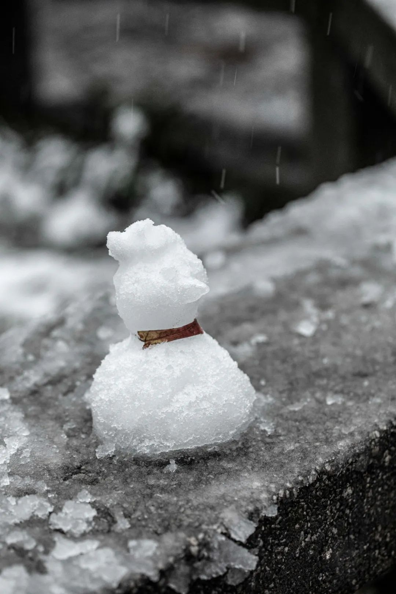
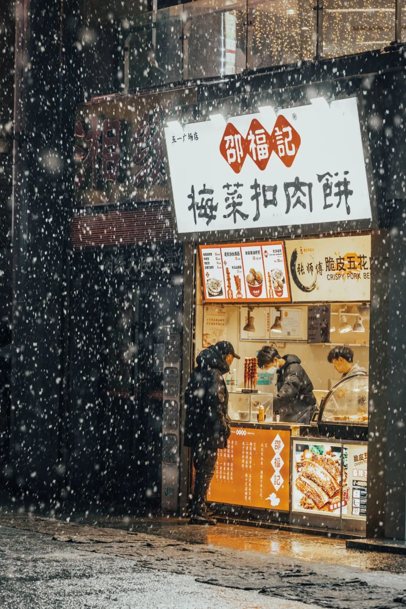
出镜
Jiaxin smile和她的朋友
（或许现在进入发表之日的时间了吗？仔细想想）
三月刚开始的几天，先放几张春天看花的图休息一下眼睛
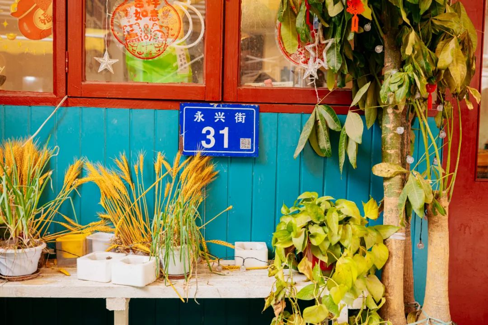
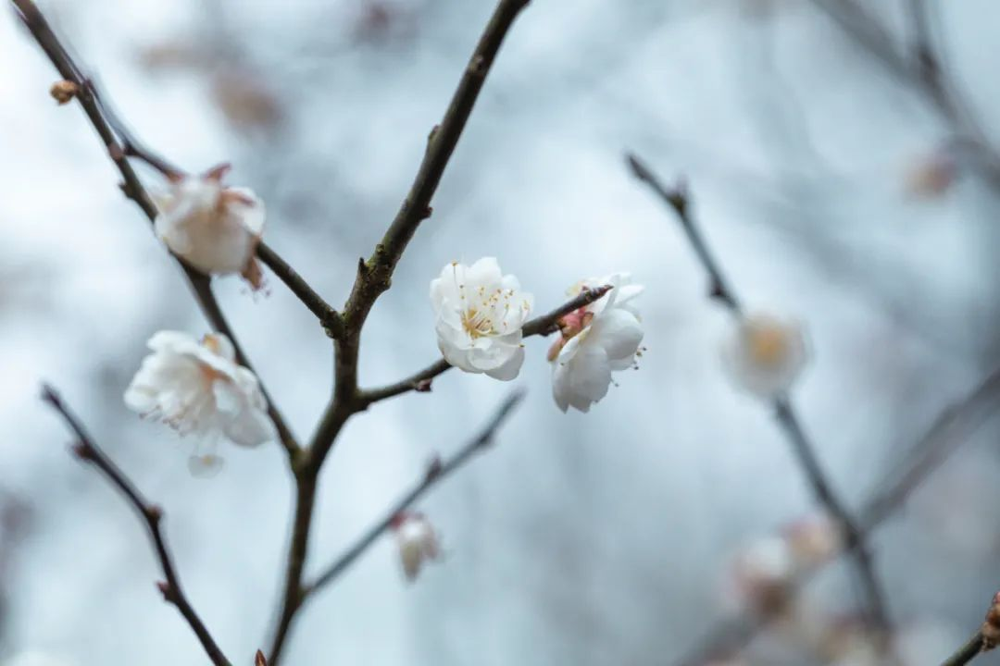
三月开始的几天，感觉一半的日子里都有人过生日。我不喜欢过自己的生日，总是草草写篇公众号回顾一下过去这一年写了点什么。但是给别人过生日又不错，可以一起去探不错的店，不管做什么都因为“诶我今天过生日耶”而变得聊有生趣。
三月开始的几天由各种离谱而又合理的事组成。去到两个线下生日的主角，都叫豆，一位是认识两年的拍照朋友，一位是我的初中室友。
单名一个字的，我现在能想到的只有上古时期的几位，尧舜禹同时代。后来的人名字就多了起来，老子(虽然我知道他叫李耳)、孙子、韩非子，更往后的辣目洋子、小张菜菜子就增增增。初中有时候叫豆也叫豆子/豆别，但他在高中的时候就成了显别，字突然变多。
一天下午天气回暖，和第二天过生日的摄影豆提前一天出去探店。
三人出行，日子随豆，她叫了LRL和我。LRL选在了小豆岛。我带了相机和礼物去，还有一些最近正在忧心忡忡的事情和刚刚在健身房锻炼完的躯壳。离谱的事情发生了<wrote in memo>：
在店里拍照请人帮忙按快门。几个小时后刷朋友圈，发现帮忙按快门的路人竟然是大半年前在回春丹live蹦迪加的朋友温子白，感觉已经好多次蹦迪同在现场但是从没有遇到过，没想到是在快门上
在店里点单，看到瓶子上有我去过的另一家小食店的字样，还加了那家店主，不过相距挺远就没在意。离谱的是！另一家店的店主今天就用私人号发了扩新说准备了这家店的第一款蛋糕，欢迎大家来
这是我拍的<富士山小丘>
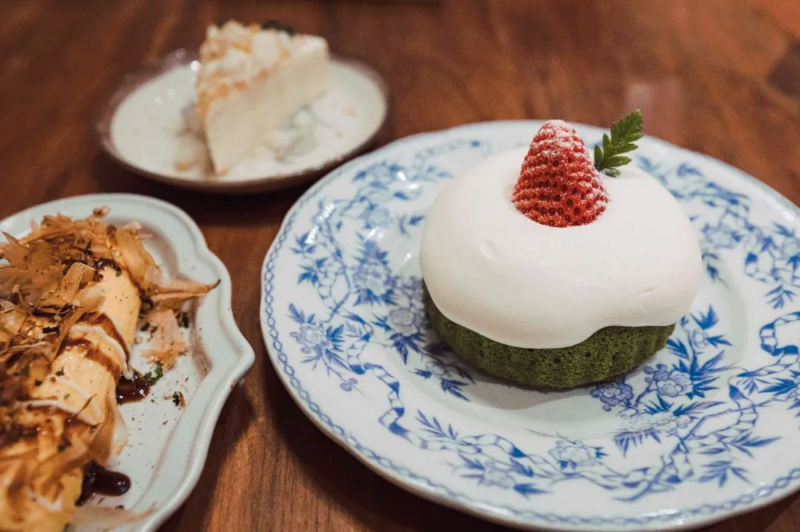
另一家小食店指的是山苜小食。两年前，我出国之前本来和另一位在曙光路798附近的文洛洛打算去探，不过那段时间正在装修，于是我们去了离岛。最近一次去山苜是去年的6月，也是和前几天一起给豆过生日的LRL一起，还专门拍了照片给豆。
后来我发当天拍的照片给山苜的店主，夸这个盘子好好看。山苜的店主说这是她的私藏好物中古盘，当天没有其他盘子了才拿出来，一直担心如果有磕碰怎么办。突然想起更古早的时候，她跟我说今天淘宝给她推衣服她觉得很眼熟，点开一看好家伙这不是在自家店门口拍的吗？而且还不止一套装扮。就很好笑。
在小豆岛出镜，谢谢摄影豆
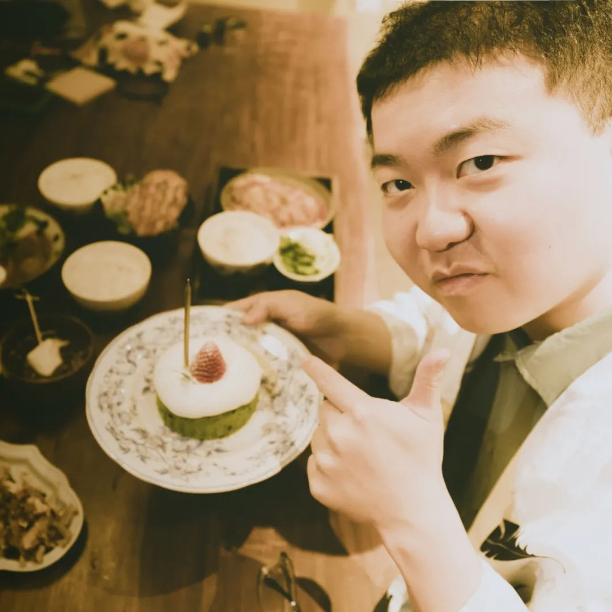
我写下这些细碎但又好像关联的事情，就觉得像是打剧本杀在复盘。楚门的世界，这部电影就很好地描述了这种感觉，说“楚门，现在世界里的演员不够了。”
而且其实如果可以读英文的话(估计我公众号八成以上的人都行)，楚门的世界原来的名字是我见过和剧情最贴合的title, The Truman Show. 楚门是True man, 当然也有杜鲁门的意思或者定义其他性别的潜力。但是这个双关真的是我觉得很漂亮的双关，尤其和剧情一起。这张的拍摄点在盐道坪，摄影Nuage élégant
昨天下午和马浪吃早饭，我看着服务生觉得好生眼熟。想了五秒钟之后，发现这是前几天在剧本杀店打本时候的dm dungeon master(昨天有人看pyq之后问我来着)主持人
阿杜打边炉是还可以，但事情真的很哈宁。
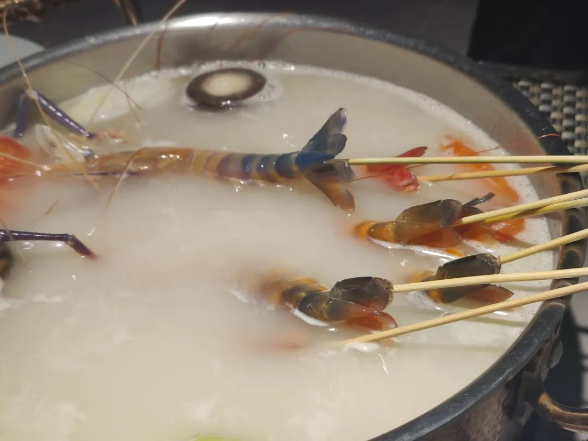
我倒也没有问他是不是在打好几份工，毕竟在一家店里问人是不是在另一家店打工，是我我也不会承认只会说你认错了。除非是在比较能让人没有顾虑的时候才会讲讲，看模样认出来了也可以抵赖不是。
这里用了乱叙的叙述手法。周五中午和室友豆出门，和他在上一个他的本命年认识，这已经是又一个本命年了。自然，就不需要掩饰都有点选择困难的事实。长沙对选择困难症最友好的餐厅是哪里呢？自然，是文运街娟娟。
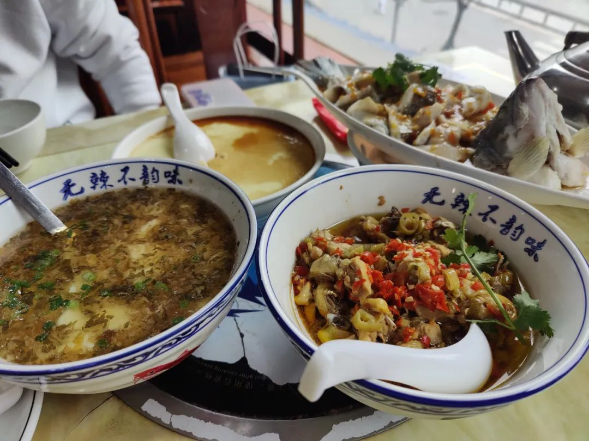
吃个饭，自然要做点运动，比如走一走。于是就走一走。走一走去哪？自然，还是那些地方。又走到了Xbox和PS5的骆驼门外，看了看，觉得氦，不要跟难得中午出来的中学生抢位子。
路过一家宠物店，看到很多好看的鹦鹉。我们像两个老大爷一样，指指点点。主要是也没有买，就离开了。
看到洗手间，就进了洗手间。我本来只觉得这就是一个简单的像是一段出行交响乐里的一小节，豆说不是：我得去给自己买个生日礼物，买一只鹦鹉。我？Fantastic! 但是在豆身上又很合理。
豆走进宠物店。宠物店是外边有一排放在走廊上的，三笼鹦鹉、几只兔子和仓鼠blah；店铺里边还有一些，周正的门面由大小不一的铁网划分了去。豆和老板商量了一下，选了店门口的鹦鹉后又走进铺子里去选笼子。我跟到了店铺门口，但是觉得气味多少有些离谱，就出来了。
豆带了一只白色的虎皮鹦鹉走，毛色在一些地方还带一点浅蓝|灰蓝色。拎着鸟笼走过小朋友的时候，小朋友的眼睛都直了，一直fix在鸟笼上没有离开。我拦着豆停一下，先别走，又对小朋友招了招手，让他看了个明白之后，我们才又离开。
我问豆：豆你为什么突然想买一只鹦鹉。
豆回我：我觉得这家宠物店好像地狱。好多的动物都被关在笼子里，望着你。我想去解救一只。
我想了想：那你是不是觉得花钱就像买赎罪券，买了就兑一张，功德是解救生命。
是的，是有点像。
那得对它负责噢！
肯定会的咯！
起个名字吧，得有个名字才好
今天下雨，那就叫泺淯吧(长沙话音Luo Yu)
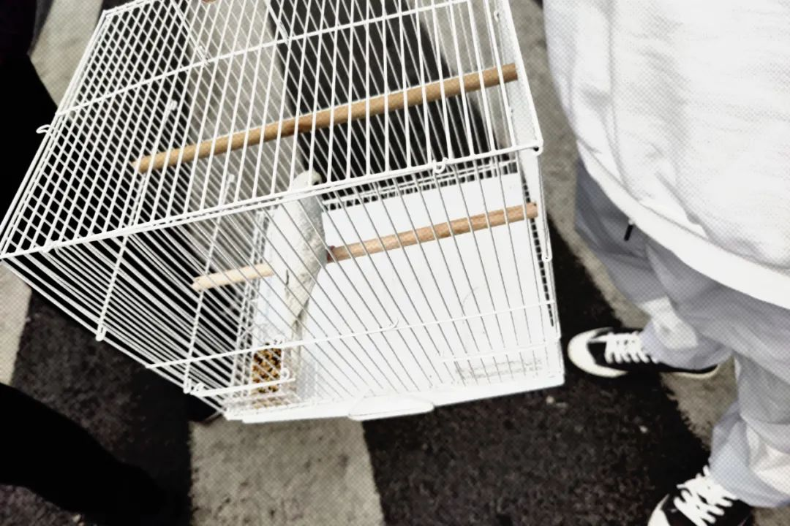
晚后我们在臭豆腐店坐下，和一堆自来熟的人用长沙话扯闲谈。不知道豆有没有这种感觉，但我是觉得在一个地方，提着鸟笼出门，在一间偏僻而又去的人不少的小吃店里用当地方言扯些家长里短乱七八糟的甚至是胡诌的事，也觉得很有趣。
大爷说鹦鹉得成对地养，不能只养一只，要去花鸟市场配对，把泺淯和其他鹦鹉放在一个笼子里，看他们是不是亲嘴，亲嘴了就可以买走一起养。邻桌的大妈嘱咐说，千万不要让鹦鹉跟画眉一起，不然会打架。
曾经看小七学姐说她实习前想象北京，觉得北京是一座人情味很浓的城市——大爷提着鸟笼子在胡同里遛弯儿，一条街走到头，跟每个人都打招呼。只是等她到了之后才发现，那样的生活离自己太远了。
你知道，有些街坊讲话是真的，有些则完全是现场编，有的是因为被别人骗了。以后等我老了我也随便编，有需要的时候我还搜几篇参考文献来曲解一下原文含义。
晚上，豆去李上安，我和另外两位好朋友去大都会乐团。大都会是City Pop风格，主唱问“有多少人听City pop是从蒸汽波过来的呢？”总之我是的，反 複 處 刑 蒸 汽 波。长沙MAO的音效在解析City pop的时候有点拉，在此按下不表
或许我在City pop里面关注的多是蒸汽波的成分，或者我其实也没有太分得清楚。比如还有回春丹的标签上打的Indie rock, newwave 还有后朋克到底分别都是些什么东西？随便！因为感觉我已经在现场蹦好了。
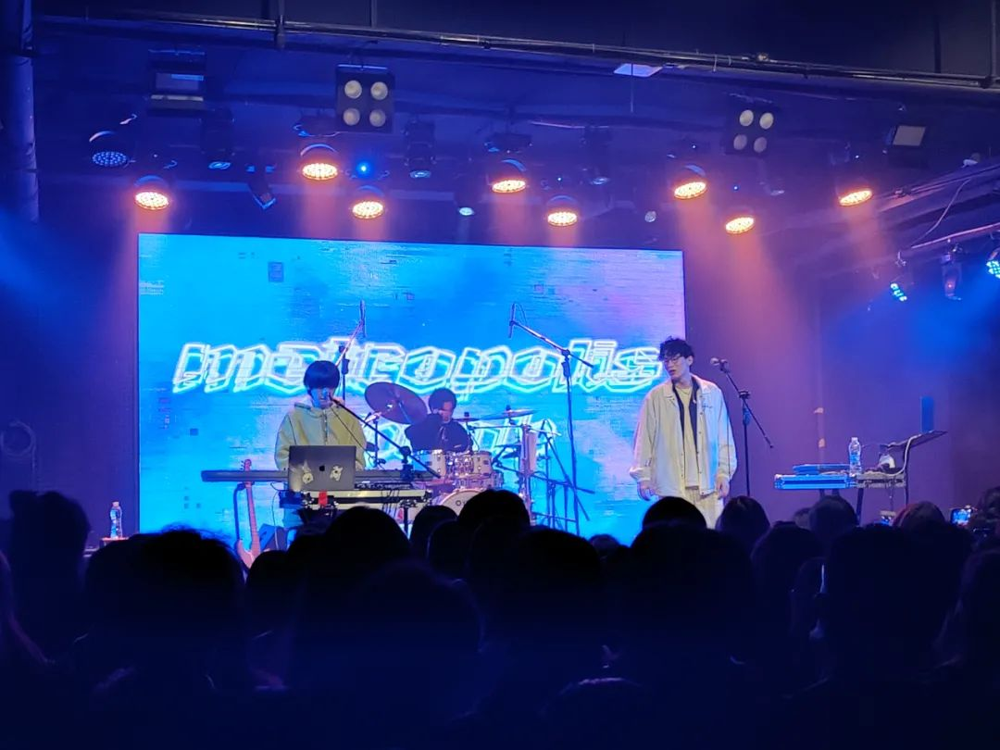
散场后，决定要去吃点什么，想着想着就路过了彩票站。中国福利彩票，买一张咯，我打算支持一下乡村教育振兴计划。一位胖胖的大哥在六张彩票当中左挑右选，看起来是二十块面值的，然后坐到了旁边的刮刮乐桌子上。我们三个蹦完live的人也坐过来，各拿了一张。
其中一张彩票是虎面的，两边像春联一样可以刮开，有虎就表示中奖了。我和山林小粒儿的票面都看起来一点消息也没有，票资全部用于扶助乡村教育计划。这也很正常，反正就图一乐，我之前刮开过的最大面额也就是和刚刚刮开的那张等值，约等于“再来一张”的水平。
而Nuage élégant不是。
Nuage élégant刮开了一侧之后，就用法语问了一遍Est-ce un tigre ? 发现我们听不懂之后，又用日语问了一遍これはトラですか？可能最后只有我没懂了，于是他用长沙话问旁边拿着三张像赌命一样刮板子的大哥，只要有脑斧就阔以兑钱吧？大哥愣了，怎么有人刮五块钱的彩票刮出来全是中中中的。长沙红中麻将一把下来都没这么多中。
老板让他把两边都刮开看看，看看一共有多少。他没发现，老板虽然在笑，但是多少有点咬牙切齿。因为开始给他的是张银版老虎，他一定换了这张金老虎。
Nuage élégant说不刮了，见好就溜溜球。福彩店老板拿出了一张绿色的50元人民币纸币，背后是布达拉宫。私以为我要是拍个照调色HSL，浅绿和绿色调控色彩肯定不止一个区域。
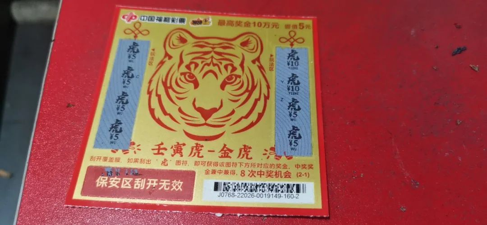
吃大餐去咯
劳动西路的细作们跑到学院街来吃夜宵。文庙坪这一带除了光头粉|猪油拌粉之外，不谈旺旺小吃店的话，那就是各种炸炸炸了。如图，姐妹炸炸炸：
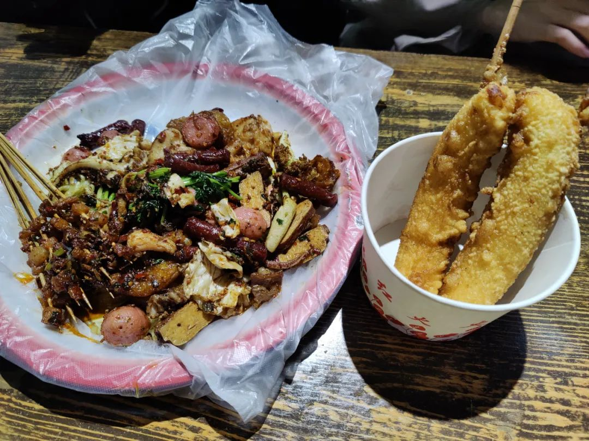